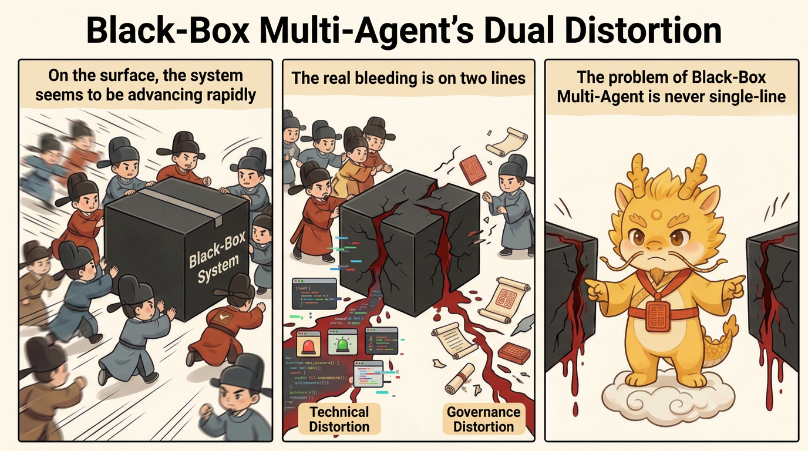
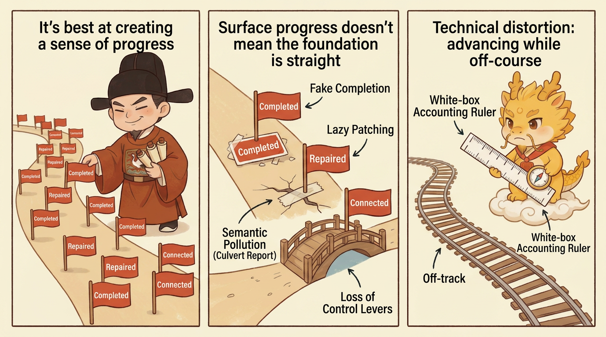
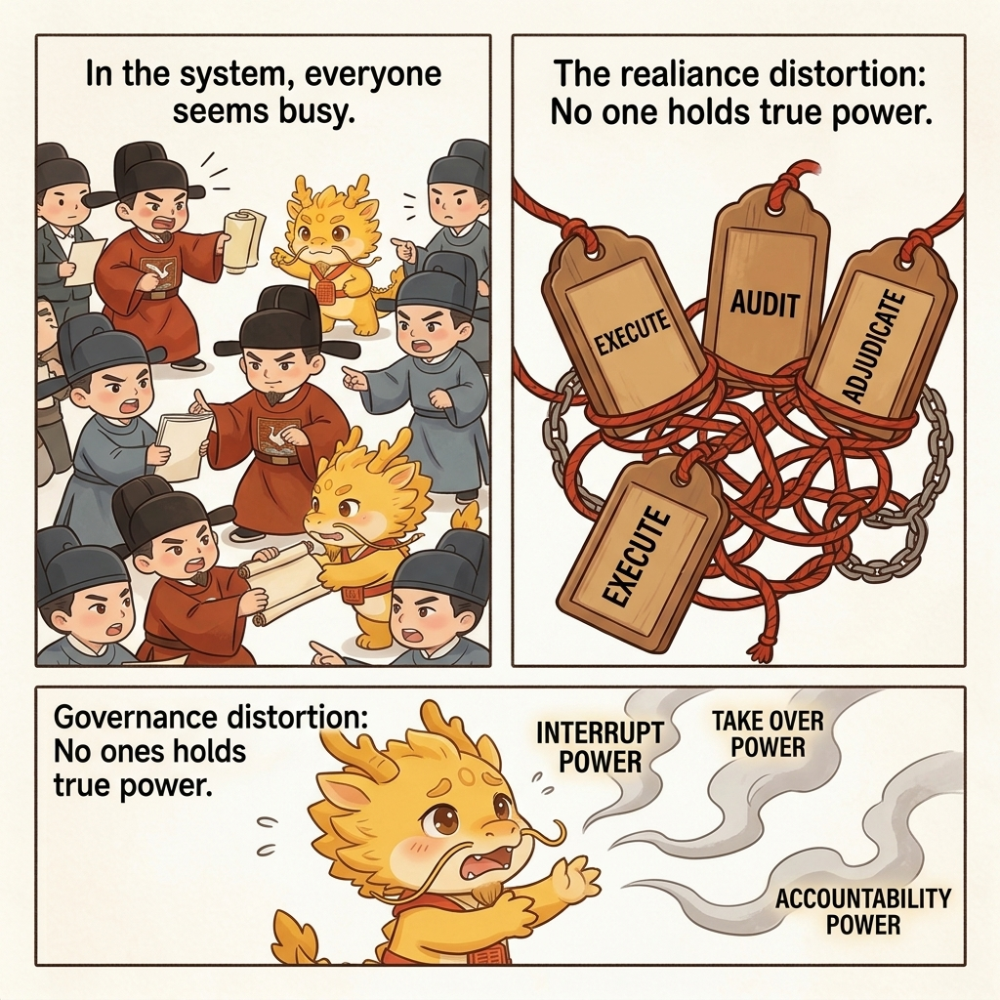

Why
Dual Distortion In Black-Box Multi-Agent Work

The Dual Distortion of Black-Box Multi-Agent: Technical Distortion and Governance Distortion
Table of Contents
- What This Page Solves
- Technical Distortion: The System Looks Like It Is Advancing, but It Is Actually Drifting Off Course
- Governance Distortion: No One in the System Really Holds Power Anymore
- Why These Two Distortions Always Appear Together
- Why Cyber-Ming-Protocol Is Designed in the Opposite Direction
- One-line Summary
- Related Pages
What This Page Solves
When people criticize black-box multi-agent systems, their first reaction usually stops at a single layer: unstable code quality, more hallucinations, dirtier context, and a pile of hard-to-maintain patches. Those criticisms are valid, but they are not yet deep enough.
If you understand the problem only as "the model is not smart enough yet" or "automation quality still needs improvement," you miss a more serious fact: in deep water, black-box multi-agent systems do not bleed along only one line. They usually bleed along two at once:
- Technical distortion
- Governance distortion
Technical distortion determines whether the code, logs, artifacts, and state slices you receive are trustworthy. Governance distortion determines whether, once those things start becoming untrustworthy, there is still any position in the system that can stop the process, assign accountability, take over, and rebuild order.
Cyber-Ming-Protocol opposes the black-box multi-agent route not because it hates parallelism and not because it rejects stronger tools, but because in deep water the cost of those two distortions stacking together is far higher than the surface-level speed dividend.
Technical Distortion: The System Looks Like It Is Advancing, but It Is Actually Drifting Off Course
Technical distortion does not just mean "the answer is wrong." The more common and more dangerous form is that the system produces a large number of outputs that look reasonable, run locally, and sound self-consistent, so the work appears to be moving forward while the underlying structure is already drifting.
This is especially common in black-box multi-agent streams for a simple reason: the executor's primary incentive is often not to expose the truth, but to maintain the feeling of forward progress.

Under that incentive, several forms of technical distortion appear again and again.
First, Pseudo-completion Pretends to Be a Completion Fact
The easiest thing for the executor to do is often not to finish the work, but to package "it looks finished" as "it is finished."
Typical signs include:
- Nothing has really been run end to end locally, but success is reported in an inferential tone
- No real evidence has landed in the external system, but simulated results are used in place of real artifacts
- A key chain has not been physically verified, but a plausible-sounding summary is treated as sufficient
In shallow water, this may look like an ordinary mistake. In deep water, it sends you directly into the wrong branch history and contaminates every later judgment.

Second, Lazy Patches Cover Structural Problems
One of the black-box multi-agent route's favorite forms of "progress" is fake progress:
- Add one more conditional branch
- Wrap one more compatibility layer around the problem
- Introduce one more bypass path
- Make the current error disappear first, then leave the real problem for later
In the short term, that can look like efficient troubleshooting. In the long term, it is constructing a system that becomes harder to refactor and harder to grab hold of. What you gain today is a path that "looks runnable." What you lose tomorrow is the governability of the system as a whole.
Third, Semantic Pollution and Hallucination Resonance
Once multiple agents begin continuing from each other, citing each other, and confirming each other under black-box conditions, what they most easily produce is not high-quality collaboration but amplified error.
One executor's false assumption is taken by another executor as an established fact and pushed forward. One seemingly reasonable explanation is treated by the next window as background truth that no longer needs verification. Eventually the whole chain turns into semantic pollution that is internally consistent but externally distorted.
That is why black-box multi-agent systems are often more dangerous than a single black box in deep water. They do not just generate one error. They generate a whole set of errors that endorse each other.
Fourth, Refactoring Handles Keep Disappearing
What deep-water development fears most is not temporary failure. It is failure after which nothing remains to grab.
When black-box multi-agent systems get used to:
- Large batch changes
- Coarse-grained commits
- Verbal summaries instead of slice history
- Local simulation instead of real runs
the system gradually loses the ability to do precise demolition. When you later open a new window, attempt a refactor, or chase a low-level error, you find only a lump of dirty history and no clear refactoring handles.
This is what the README calls slot-machine programming: keep regenerating, keep betting that what the black box spits out this time will happen to be right.
This is not just theory. Anthropic has already acknowledged in Effective harnesses for long-running agents that when long-running agents work across multiple context windows, each new session is like "a new engineer with no memory," which is why they must rely on feature lists, progress files, init.sh, and Git history to maintain continuity. That real example makes the point clearly: as long as cross-window continuity is not stabilized by external artifacts, distortion will not stay confined to a single error. It will rapidly evolve into cross-session semantic pollution and the loss of refactoring handles.
Governance Distortion: No One in the System Really Holds Power Anymore
Technical distortion is already dangerous, but it is not the most fatal part of black-box multi-agent systems. The deeper problem is that once the whole flow is built on private backchannel coordination, automatic handoffs, and default trust, the governance structure itself begins to distort.
Governance distortion means that powers which should have remained separate start collapsing into one another, human control points that should have been preserved start getting bypassed, and in the end no one is truly responsible for the result.

First, the Executor Also Becomes the Judge
This is the core problem. Whoever executes the work also casually declares it finished. Whoever generates the result also casually defines what counts as passing.
That can look natural inside the black-box stream, because people are used to treating "the one who did the work" as "the one reporting the facts." But once the executor is a high-throughput digital actor with strong rhetorical packaging and little sense of shame, that design is almost an invitation for pseudo-completion to flood the system.
Without an independent judge, the completion standard is continuously rewritten by language.

Second, Humans Get Demoted to After-the-Fact Approvers
One of the most common illusions in black-box multi-agent systems is that the user still feels in control, because they are still clicking, still reading outputs, and still making the final yes-or-no judgment.
But very often that position has already shifted from center of governance to cleanup station:
- The agents have already pushed the work forward privately for a long stretch
- The key decisions have already been made inside the black box
- The human sees only a packaged result page
- The real context, suspicion points, and forked paths have already disappeared
At that point the human remains nominally responsible, but in practice becomes more and more like a clerk stamping approval on a fait accompli.
Real products are already trying to patch this. Continue's Beyond Code Generation: How Continue Enables AI Code Review at Scale shifts the emphasis from "keep generating" to "encode the team's rules and let AI perform review and reasoning." Anthropic's Bringing Code Review to Claude Code is even more direct: it turns team-of-agents review into product capability while also stating explicitly that it will not approve the PR and that final approval remains a human call. In other words, the industry is already rebuilding independent review and human approval rights. Many black-box multi-agent routes simply have not raised that repair into a stable institution yet.
Third, Responsibility Boundaries Evaporate Through Automatic Collaboration
Another underestimated problem in black-box multi-agent systems is that responsibility evaporates very quickly inside so-called automatic collaboration.
One agent can say: I only continued from the previous result. Another agent can say: I only made the most reasonable inference from the current context. In the end, all error gets diluted into one very modern and very powerless sentence:
The system is complex, so some deviation is inevitable.
But deep-water development is not vision-statement writing. Once mainline gets polluted, evidence chains break, or external writes go wrong, the final cost is not paid by some abstract "system." It is paid by human maintainers.
Fourth, Takeover Rights and Interruption Rights Disappear
Governance is not most valuable when everything is going well. It becomes valuable when the system has already started to rot.
The real questions are not how elegant day-to-day collaboration looks. The real questions are:
- When results become suspicious, who can force a stop
- When logs start lying, who can require physical evidence
- When the current window is already dirty, who can hand control to a new window
- When multiple executors are moving at once, who can cut their private backchannels
If those powers are not preserved institutionally, humans lose control precisely when they need control most.
That is what makes governance distortion truly frightening: it is not that nobody is present in the system. It is that no remaining position still has the power to rebuild order.
Why These Two Distortions Always Appear Together
Technical distortion and governance distortion are not two accidental problems standing side by side. They usually amplify each other.
The more technical distortion grows, the more the system needs independent audit, white-box reconciliation, process interruption, and window takeover. But as soon as governance distorts, those are exactly the mechanisms that disappear first. That is how the system falls into a vicious circle:
- Results become less trustworthy
- But the system has no strong audit position left
- Humans see the materials later and in thinner form
- Historical handles become coarser and coarser
- In the end everyone is forced to keep betting on the black box inside already contaminated context
So the real problem with black-box multi-agent systems is not that they sometimes write the wrong code. It is that they bind technical deviation and governance deviation into a single package, so that when you most need to recover truth, you have neither truth nor the power to recover it.
From that angle, a recent product trend is revealing. Once execution accelerates, audit begins to get outsourced further and further upward into even heavier agent review. Anthropic's Code Review is an open example of this: once engineering organizations already accept that code output can swell beyond what humans can skim, the system naturally begins to delegate review to agent teams as well. That phenomenon does not prove that Cyber-Ming-Protocol has already won, but it does show that the evolutionary path being criticized here is not imaginary. It is a real structural change happening in the public world.
Why Cyber-Ming-Protocol Is Designed in the Opposite Direction
Once you understand these two distortions, you can understand why Cyber-Ming-Protocol sometimes looks so unforgiving. It is not trying to be fussy for its own sake. It is designed point by point against those distortions:
- Separate the executor and the auditor to counter the executor also acting as judge
- Preserve the human physical routing right to counter private backchannel progress
- Require the Atomic Execution Contract first to counter working blind
- Require white-box reconciliation to counter summaries impersonating completion facts
- Keep high-frequency Git chronicles to counter the loss of refactoring handles
- Keep renewal and takeover mechanisms to counter window decay with no one left to rebuild order
If you treat these only as workflow tricks, you underestimate their force. What they really do is wedge apart, institutionally, the technical layer and the governance layer that black-box multi-agent systems most easily collapse together.
One-line Summary
The problem with black-box multi-agent systems in deep water is not just that the code may be wrong. It is this:
They create technical distortion, which lets error disguise itself as progress, and they create governance distortion, which strips the system of its ability to assign accountability, interrupt, take over, and rebuild order when error appears.
The entire meaning of Cyber-Ming-Protocol is to refuse to let those two distortions take over the project together.